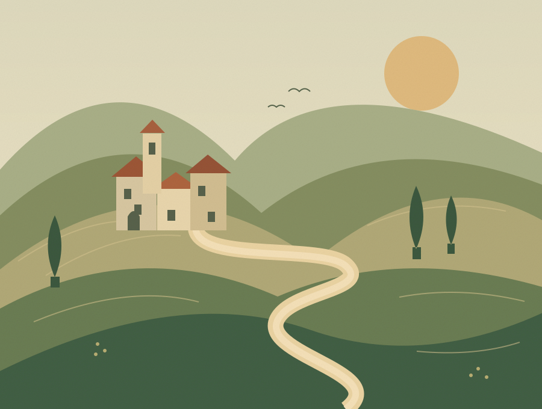

Coast path
Coast pathBracken Quay → Gullhaven
The Salt Path
Sea thrift, two headlands, and a harbour inn that keeps the soup on.
£295 / person
Walk the coastCoast paths. Hill towns. Slow trains.
Salt on your sleeves. A lane that turns into a footpath. A train you’re not in a hurry to get off. Walking weekends, quietly sorted.
For people who like a detour, not a deadline.
01Just three good routes. No endless scrolling.
02Beds & the fiddly bits, already sorted.
03Self-guided. You set the walking pace.
The 2027 shortlist
Coast pathBracken Quay → Gullhaven
Sea thrift, two headlands, and a harbour inn that keeps the soup on.
£295 / person
Walk the coast
Hill townsBellwether → Alderfold
Limestone lanes, a high meadow, and a bakery worth the last uphill mile.
£425 / person
Take the high lane Slow train + walks
Slow train + walksRook Cross → Lowmere
Seven stops, a river path, and the very best seat by the window.
£345 / person
Catch the slow onePrices in GBP, per person sharing a twin or double, for April–October 2027. Breakfast and local arrival/departure travel included. Mainline travel extra.
Small on purpose
Not a coach tour. Not a spreadsheet with every minute spoken for. We’re three people, one well-thumbed timetable, and a list of small inns we’d send our friends to.
We sort the bed, the route notes, and the awkward station hop. You decide how long to sit on that wall looking at the sea.
A little about our little deskLess in your bag. More in your day.